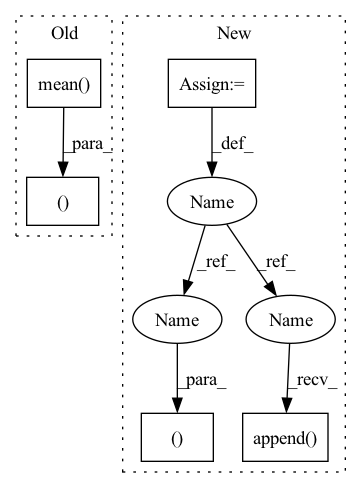

Pattern ID :2785

Before Change
xq = xq + _xq
codes.append(_codes)
codes = torch.cat(codes, 1)
return xq, (x - xq).pow(2).mean(), codes
def encode(self, x):
return self.forward(x)[-1]
After Change
residual = x
all_losses = []
all_indices = []
n_q = n_q or len(self.layers)
for layer in self.layers[:n_q]:
quantized, indices, loss = layer(residual)
residual = residual - quantized
quantized_out = quantized_out + quantized
all_indices.append(indices)
all_losses.append(loss)
out_losses, out_indices = map(torch.stack, (all_losses, all_indices))
return quantized_out, sum(out_losses), out_indices.permute(1, 0, 2)
def encode(self,
In pattern: SUPERPATTERN
Frequency: 3
Non-data size: 5
Instances
Fragment ID: 15485704
Project Name: caillonantoine/rave
Commit Name: b58cba5d330c227f2122bc07fcbf7ed068eb91be
Time: 2023-01-24
Author: caillon@ircam.fr
File Name: rave/quantization.py
M Class Name: ResidualVQ
N Class Name: ResidualVectorQuantization
M Method Name: forward(3)
N Method Name: forward(2)
M Parent Class: nn.Module
N Parent Class: nn.Module
M File Name: rave/quantization.py
N File Name: rave/quantization.py
M Start Line: 106
M End Line: 116
N Start Line: 289
N End Line: 307
'>
Before Change
// [n, h*w, k]
logit = self._select(x)
logit = logit - logit.mean(1, keepdim=True)
logit = logit / logit.std(1, keepdim=True)
meanLogit = logit.detach().mean(1)
// [n, k], 3σ rule
bernoulli = Bernoulli(logits=meanLogit - 3.0)
// [h*w, n, k] -> [n, h*w, k] (0 or 1 -> choose or not choose)
randomFalseMask = bernoulli.sample((logit.shape[1], )).permute(1, 0, 2)
randomFalseMask *= -1e9
bernoulli = Bernoulli(logits=-meanLogit - 3.0)
randomTrueMask = bernoulli.sample((logit.shape[1], )).permute(1, 0, 2)
After Change
quantizeds = list()
codes = list()
logits = list()
xs = list()
for xRaw in latents:
n, c, h, w = xRaw.shape
// [1, k, c]
codebook = getattr(self, "codebook")[None, ...]
// [n, c, h, w] -> [n, h, w, c]
encoderIn = xRaw.permute(0, 2, 3, 1)
// [n, h, w, c] -> [n, h*w, c]
encoderIn = self._position(encoderIn).reshape(n, -1, c)
// [1, k, c]
codebookQ = self._codebookQuery(codebook)
// [n, h*w, c]
x = self._encoder(encoderIn, codebookQ)
xs.append(x)
// [n, h*w, k]
logit = self._select(x)
// [k]
bernoulli = Bernoulli(probs=maskProb)
// [n, h*w, k] (0 or 1 -> choose or not choose)
randomFalseMask = bernoulli.sample((n, h*w, )).bool()
maskedLogit = logit.masked_fill(randomFalseMask, -1e9)
// randomFalseMask *= -1e9
// maskedLogit = logit + randomFalseMask // + randomTrueMask
sample = F.gumbel_softmax(maskedLogit, 1.0, True)
// [1, k, c]
codewords = self._codebookEncoder(codebook)
// [n, h*w, c]
quantized = sample @ codewords[0, ...]
// [n, h*w, c]
posistedQuantized = self._position(quantized.reshape(n, h, w, c)).reshape(n, -1, c)
// [1, k, c]
decodedCodes = self._codebookDecoder(codebook)
// [n, c, h, w]
deTransformed = self._decoder(posistedQuantized, decodedCodes).reshape(n, h, w, c).permute(0, 3, 1, 2)
// [n, c, h, w]
quantizeds.append(deTransformed)
codes.append(sample.argmax(-1).reshape(n, h, w))
logits.append(logit.reshape(n, h, w, -1))
return quantizeds, codes, logits, xs
'>
Fragment ID: 15485701
Project Name: xiaosu-zhu/mcquic
Commit Name: ff056abb47b531e42496967adda543c562e1cefd
Time: 2021-05-12
Author: xiaosu.zhu@outlook.com
File Name: src/mcqc/models/quantizer.py
M Class Name: TransformerQuantizer
N Class Name: TransformerQuantizer
M Method Name: forward(3)
N Method Name: forward(3)
M Parent Class: nn.Module
N Parent Class: nn.Module
M File Name: src/mcqc/models/quantizer.py
N File Name: src/mcqc/models/quantizer.py
M Start Line: 505
M End Line: 554
N Start Line: 508
N End Line: 554
'>
Before Change
xq = xq + _xq
codes.append(_codes)
codes = torch.cat(codes, 1)
return xq, (x - xq).pow(2).mean(), codes
def encode(self, x):
return self.forward(x)[-1]
After Change
residual = x
all_losses = []
all_indices = []
n_q = n_q or len(self.layers)
for layer in self.layers[:n_q]:
quantized, indices, loss = layer(residual)
residual = residual - quantized
quantized_out = quantized_out + quantized
all_indices.append(indices)
all_losses.append(loss)
out_losses, out_indices = map(torch.stack, (all_losses, all_indices))
return quantized_out, sum(out_losses), out_indices.permute(1, 0, 2)
def encode(self,
'>
Fragment ID: 15485703
Project Name: acids-ircam/rave
Commit Name: b58cba5d330c227f2122bc07fcbf7ed068eb91be
Time: 2023-01-24
Author: caillon@ircam.fr
File Name: rave/quantization.py
M Class Name: ResidualVQ
N Class Name: ResidualVectorQuantization
M Method Name: forward(3)
N Method Name: forward(2)
M Parent Class: nn.Module
N Parent Class: nn.Module
M File Name: rave/quantization.py
N File Name: rave/quantization.py
M Start Line: 106
M End Line: 116
N Start Line: 289
N End Line: 307